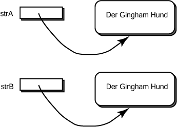

Angenommen, dass artikelA == artikelBartikelB == artikelC
Antwort:
Genau ein Objekt (und drei Referenzvariablen, von denen jede darauf verweist.)
Angenommen, dass artikelA == artikelBartikelB == artikelC
Genau ein Objekt (und drei Referenzvariablen, von denen jede darauf verweist.)
equals()
Sie haben bereits die Methode equals( String ) der Klasse
String gesehen.
Die Methodeequals( String )der KlasseStringüberprüft, ob zwei Strings die gleichen Zeichen enthalten.
Die Methode equals( String ) betrachtet Objekte.
Sie ermittelt "Äquivalenz". Der ==
-Operator ermittelt "Identität".
Zum Beispiel,
|  |
String strA; // erstes Objekt String strB; // zweites Objekt strA = new String( "Der Gingham Hund" ); strB = new String( "Der Gingham Hund" ); if ( strA.equals( strB ) ) System.out.println( "Dies WIRD ausgegeben."); if ( strA == strB ) System.out.println( "Dies wird NICHT ausgegeben."); |
In diesem Beispiel sind zwei Objekte (jedes Objekt hat seine eigene Identität,
also meldet ==
false).
Jedes Objekt enthält äquivalente Daten (also meldet die equals() Methode true).
Wenn Sie von einem Blatt Papier eine Fotokopie machen würden, hätten Sie zwei Blatt Papier.
== mit dem zweiten Blatt?equals() mit dem zweiten Blatt?